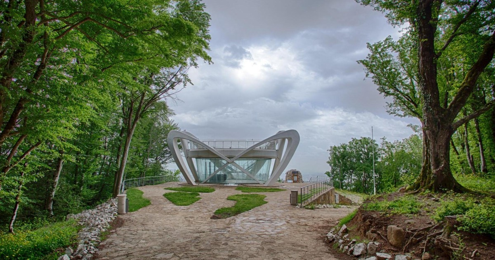
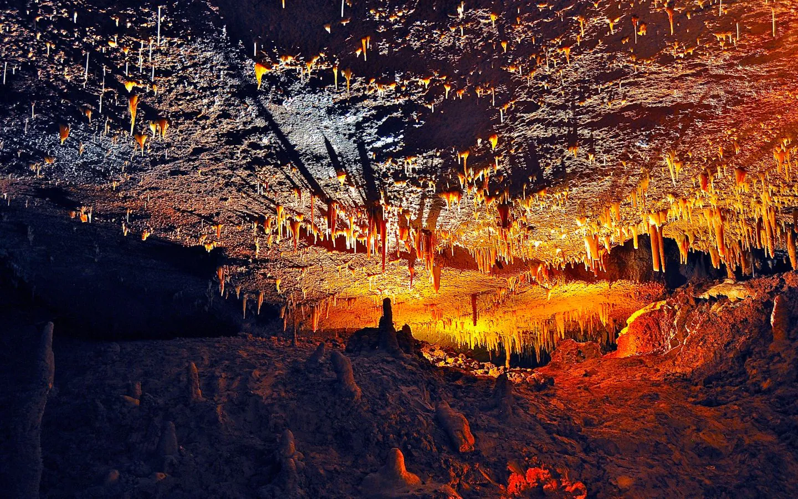

სათფლიის მღვიმე
სათაფლიის მღვიმე საქართველოს იმერეთის მხარეში მდებარეობს და ცნობილია დინოზავრის ნაკვალევითა და ულამაზესი სტალაქტიტებითა და სტალაგმიტებით. მღვიმე არის უფრო დიდი ნაკრძალის ნაწილი, რომელიც მოიცავს მუზეუმს და შუშის ხიდს განსაცვიფრებელი ხედებით.
პრომეთს მღვიმე
პრომეთეს მღვიმე, რომელიც ასევე იმერეთში მდებარეობს, საქართველოს ბუნების ერთ-ერთი საოცრებაა. გამოქვაბულში არის თვალწარმტაცი წარმონაქმნები, მიწისქვეშა მდინარეები და ტბები. გიდის ტურები უზრუნველყოფს მომხიბვლელ გამოცდილებას ულამაზესი განათებით, რაც აძლიერებს მღვიმის ბუნებრივ სილამაზეს.
მარტვილის კანიონი

მარტვილის კანიონი, რომელიც მდებარეობს სამეგრელოს რეგიონში, სტუმრებს სთავაზობს შანსს დაათვალიერონ მისი განსაცვიფრებელი ჩანჩქერები და კრისტალურად სუფთა წყლები. შესაძლებელია ნავით ტურები, რაც საშუალებას გაძლევთ დატკბეთ კანიონის მშვიდი სილამაზით ახლოს. ეს შესანიშნავი ადგილია ბუნების მოყვარულთათვის და ფოტოგრაფებისთვის.